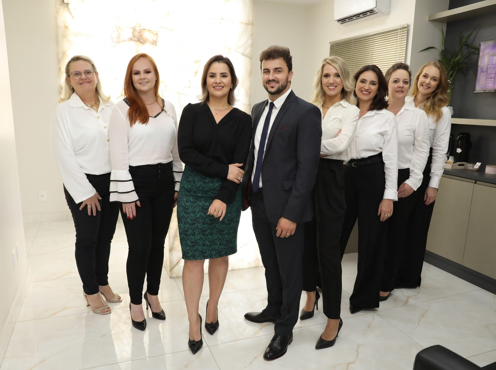
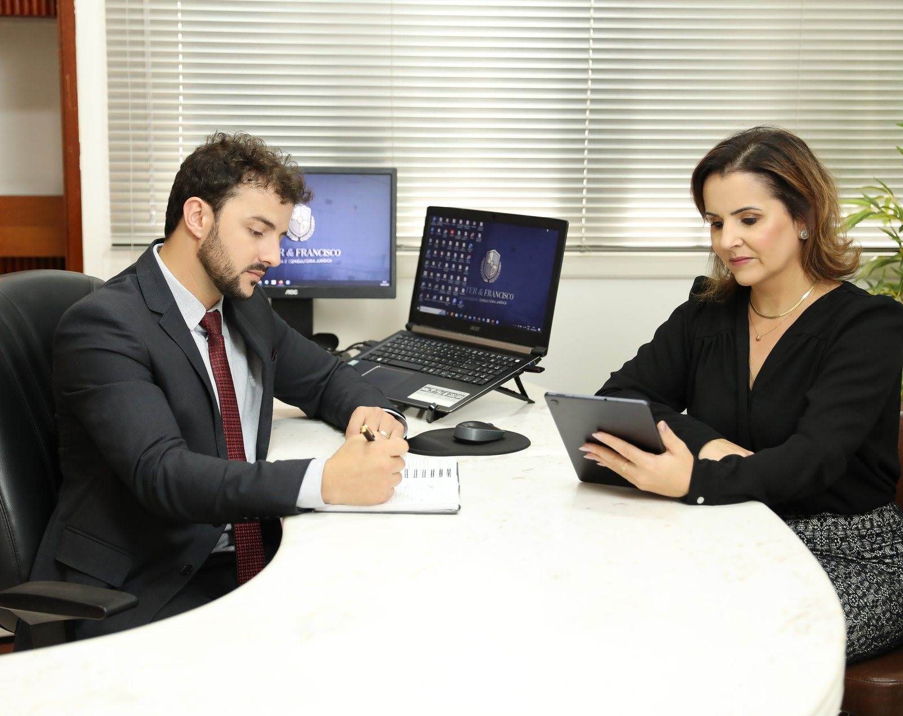
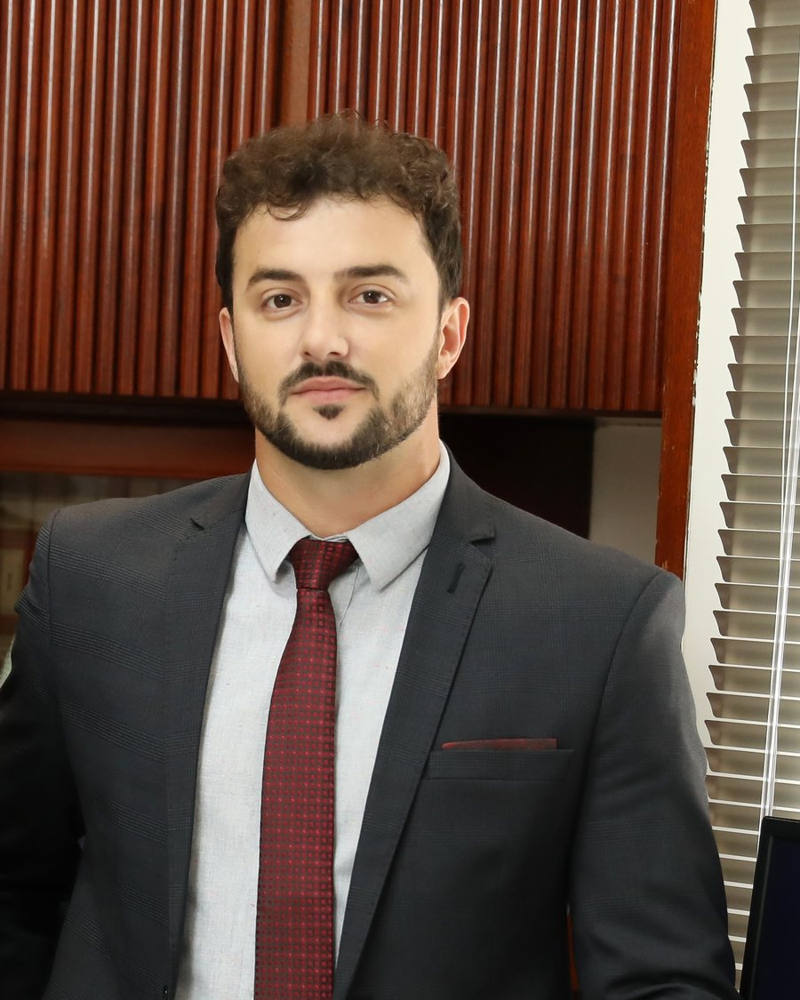
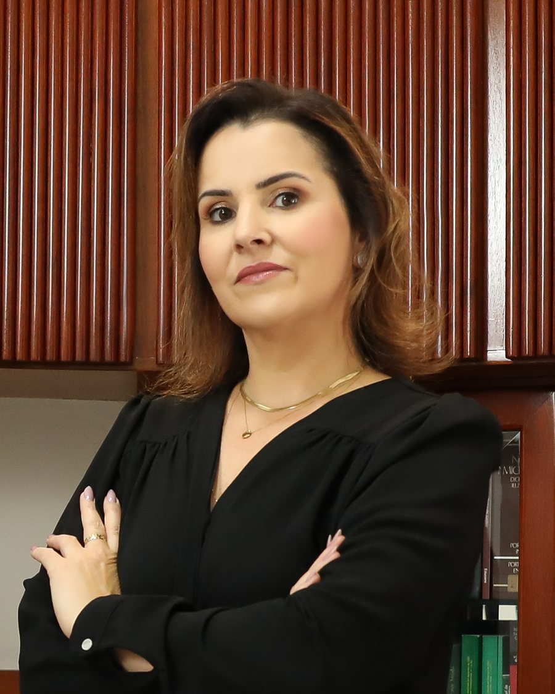
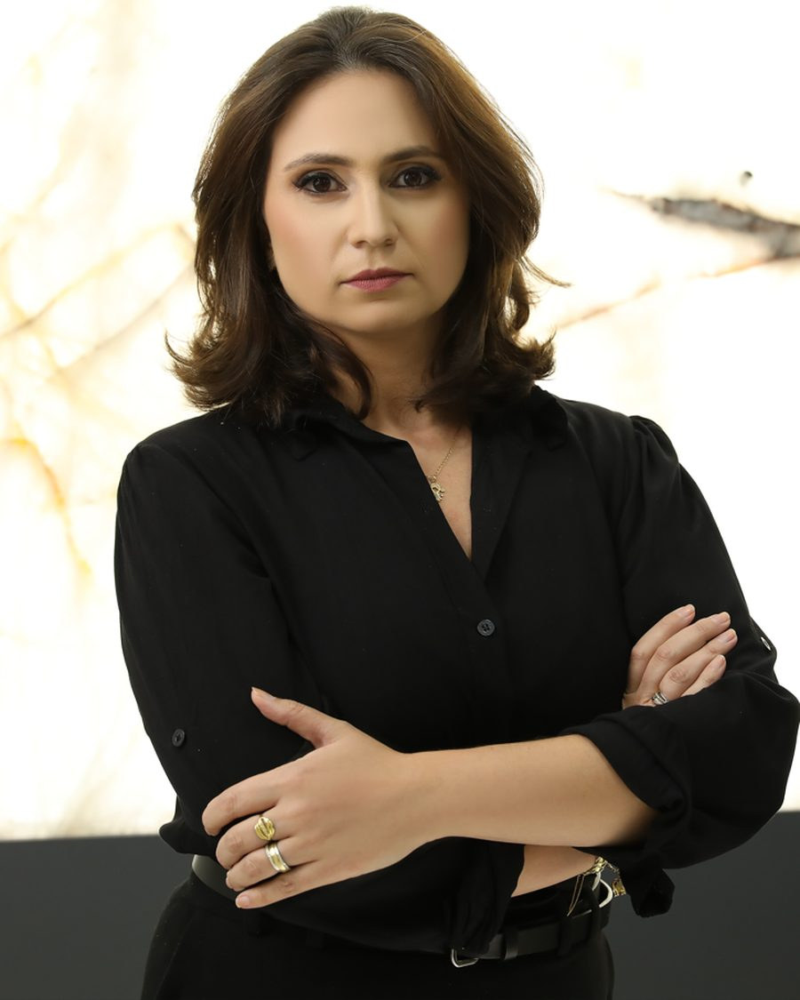
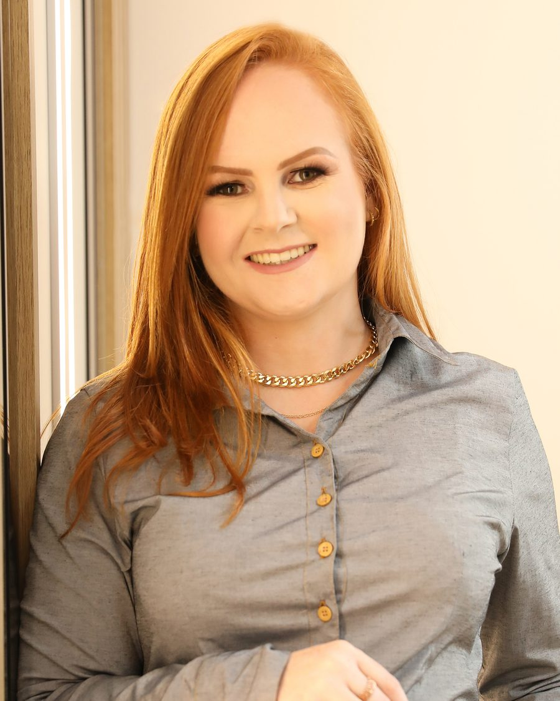
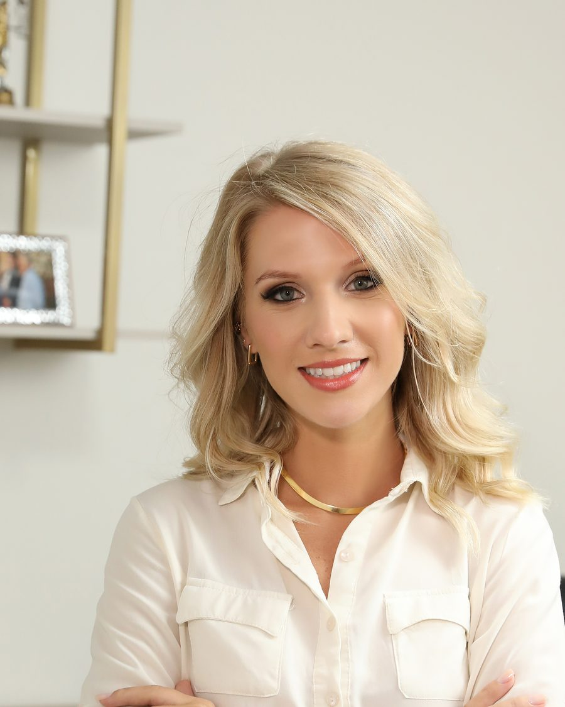
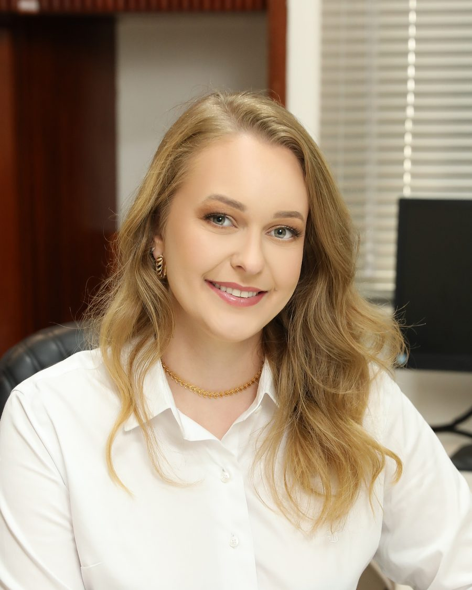
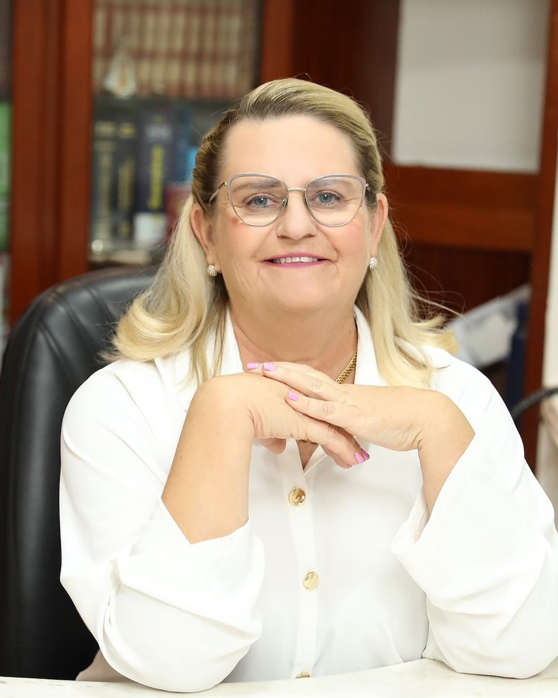
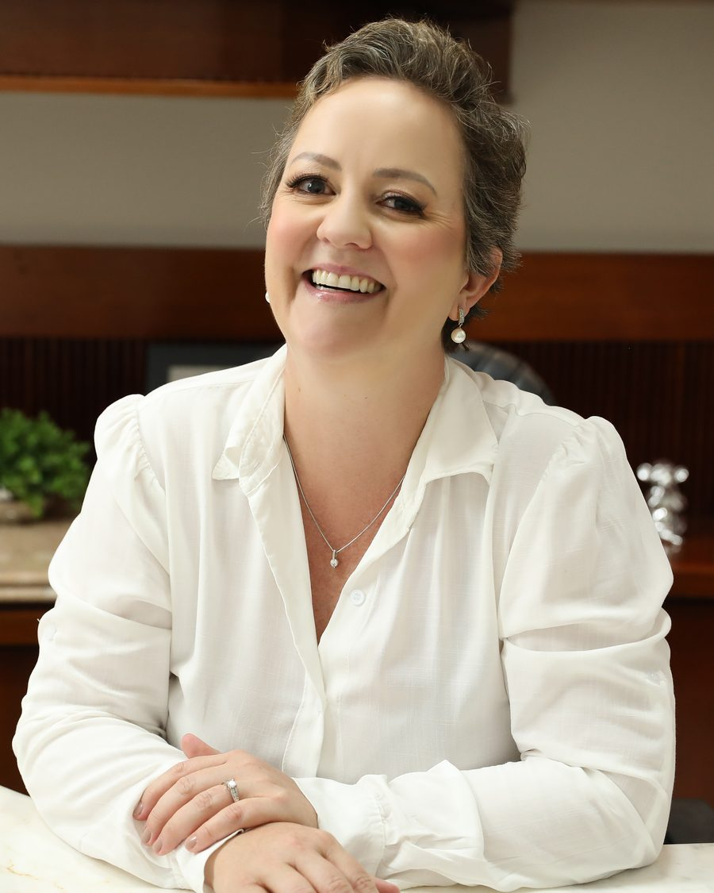

Visão
Ser uma sociedade de advogados reconhecida pela qualidade de seus serviços, pela transparência e pela ética na defesa dos interesses de seus clientes.
Advocacia e Consultoria Jurídica · OAB/SC
Escritório fundado por Álvaro Küster e Rita Graciani Francisco Aquino. Uma equipe de advogados especializados, com atendimento individualizado e sede no centro de Ituporanga, na Rua Balduíno Sens.

O escritório
O escritório foi fundado em 2018 pelos advogados Álvaro Küster e Rita Graciani Francisco Aquino. Hoje reúne uma equipe de advogados especializados, com formação e experiência em diferentes áreas do Direito.
Atuamos nas esferas preventiva, consultiva e contenciosa, na via judicial e na extrajudicial, sempre com o objetivo de reduzir os riscos para o cliente. Cada caso é tratado como único, com atendimento personalizado e contato permanente.
Trabalhamos com ética, sigilo profissional, lealdade e competência técnica. Nossa prioridade é compreender a fundo as necessidades de cada cliente, seja pessoa, família, produtor rural ou empresa, e oferecer respostas precisas e funcionais.

| Razão social | Küster & Francisco Advocacia e Consultoria Jurídica |
|---|---|
| Registro | OAB/SC 5.986 |
| CNPJ | 38.949.535/0001-86 |
| Fundação | 2018 |
| Sócios fundadores | Álvaro Küster OAB/SC 47.188 Rita Graciani Francisco Aquino OAB/SC 50.186 |
| Corpo jurídico | Advogados especializados por área |
| Atuação | Preventiva, consultiva e contenciosa |
| Sede | R. Balduíno Sens, 163 · Centro · Ituporanga/SC |
Visão
Ser uma sociedade de advogados reconhecida pela qualidade de seus serviços, pela transparência e pela ética na defesa dos interesses de seus clientes.
Missão
Proporcionar segurança jurídica, apontar e quantificar riscos, com atitudes focadas nos resultados econômicos dos nossos clientes, evitando litígios.
Valores
Para tomar a decisão correta.
Do conhecimento e das metodologias.
Aliada aos novos métodos de conhecimento.
Na aplicação do Direito e nas relações humanas.
Quanto aos riscos do negócio, da causa ou do projeto.
Áreas de atuação
Você é atendido pelo advogado responsável pelo assunto. Quando o caso envolve mais de uma área, a equipe trabalha em conjunto.
Aposentadorias, pensão por morte, auxílios e benefícios por incapacidade e revisões junto ao INSS.
Bianka Meurer · Tânia Maria Pretti · Daniela França Guimarães
Orientação e defesa de empregados e empregadores: rescisões, verbas, acordos e processo do trabalho.
Bruna Caroline Busarello
Inventários, testamentos e planejamento sucessório, em cartório ou na Justiça.
Rita Graciani Francisco Aquino · Tânia Maria Pretti
Compra e venda, escrituras públicas, usucapião e regularização de imóveis.
Rita Graciani Francisco Aquino
Divórcio, guarda, pensão alimentícia e acordos familiares.
Tânia Maria Pretti · Kelly Hillesheim Mees
Contratos rurais, assessoria a produtores, regularização de trabalhadores de safra e questões ambientais.
Fernanda Rubia Selhorst
Elaboração e revisão de contratos, cobranças, responsabilidade civil e ações indenizatórias.
Bianka Meurer · Kelly Hillesheim Mees · Daniela França Guimarães
Execuções, títulos de crédito, negativação indevida e revisão de contratos bancários.
Álvaro Küster
Demandas perante a administração pública, direitos de servidores e gestão pública.
Álvaro Küster · Kelly Hillesheim Mees
Adequação de empresas à LGPD e questões de direito digital.
Kelly Hillesheim Mees
Multas, suspensão e cassação da CNH e acidentes de trânsito.
Fernanda Rubia Selhorst
Defesa e acompanhamento em inquéritos e processos criminais.
Fernanda Rubia Selhorst
Consultoria trabalhista preventiva, contratos, recuperação de créditos e defesa em fiscalizações, com assessoria contínua.
Álvaro Küster · Rita Graciani Francisco Aquino · Bruna Caroline Busarello
Equipe

Sócio fundador
OAB/SC 47.188
Graduado pela UNIDAVI e pós-graduado em Direito Administrativo com ênfase em Gestão Pública. Especialista em ações de execução pelo curso Expert em Execuções, ministrado pelo juiz de direito José Andrade. Atuou no cartório e no gabinete da 1ª Vara e na 1ª Promotoria de Justiça da Comarca de Ituporanga, além de escritório em Jaraguá do Sul com filiais em outros estados.

Sócia fundadora
OAB/SC 50.186
Graduada pela UNIDAVI e pós-graduada em Direito Civil e Empresarial, Notarial e Registral, Direito Imobiliário e Processual Civil. Especialista em ações de execução pelo curso Expert em Execuções. Trabalhou por dez anos no Tabelionato de Notas de Ituporanga, na elaboração de inventários, testamentos, divórcios, usucapiões e escrituras públicas.






Trajetória
2018
Álvaro Küster e Rita Graciani Francisco Aquino fundam o escritório em Ituporanga. Bruna Caroline Busarello é a primeira parceira oficial da casa.
2020
Bianka Meurer integra a equipe, com atuação na área cível e, em especial, previdenciária.
2021
Fernanda Rubia Selhorst chega ao escritório e abre a frente de agronegócio, com assessoria na contratação e na regularização de trabalhadores de safra em Ituporanga e região.
2023
Kelly Hillesheim Mees passa a integrar o corpo jurídico, trazendo experiência em direito administrativo e proteção de dados.
2024
Tânia Maria Pretti, advogada desde 1986 e ex-procuradora do Município, e Daniela França Guimarães, advogada desde 2010, se juntam ao escritório.
Hoje
Uma equipe de advogados especializados atende no centro de Ituporanga, em sede identificada pelo brasão do escritório.
Avaliações no Google
“Profissionais competentes e comprometidos na busca do melhor para os clientes.”
5,0
Nota média em 41 avaliações no Google.
As palavras mais citadas são competentes, ética e eficiente.
Localização
Sede
Centro · Ituporanga/SC · 88400-000
(47) 3533-5141